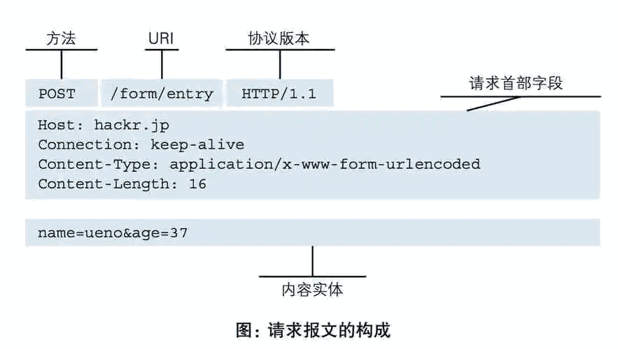
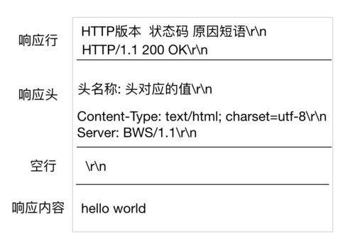

计算机网络(五)HTTP和HTTPS
1. 什么是Http协议？⭐
基本介绍：
HTTP（Hyper Text Transfer Protocol）：全称超文本传输协议，是用于从万维网（WWW:World Wide Web）服务器传输超文本到本地浏览器的传送协议。
HTTP 是一种应用层协议，是基于 TCP/IP 通信协议来传递数据的，其中 HTTP1.0、HTTP1.1、HTTP2.0 均为 TCP 实现，HTTP3.0 基于 UDP 实现。现主流使用 HTTP1.0 和 HTTP3.0。
协议：为了使数据在网络上从源头到达目的，网络通信的参与方必须遵循相同的规则，这套规则称为协议，它最终体现为在网络上传输的数据包的格式。
通俗点讲，协议就是要保证网络通信的双方，能够互相对接上号。就像是两个人传递纸条通过互相指定的暗号，如果发送天亮了，表示可以打游戏了等等。
HTTP协议的特点包括：
- 简单性：HTTP协议的设计简单明了，易于理解和实现。
- 无状态性：HTTP协议是无状态的，即服务器不会保存客户端的状态信息。每个请求都是独立的，服务器不会记住之前的请求。
- 可扩展性：HTTP协议支持通过添加新的请求方法、头部字段等来扩展其功能。
- 基于请求-响应模型：客户端发送请求给服务器，服务器根据请求返回相应的响应。
- 支持缓存：HTTP协议支持缓存机制，可以减少数据传输和提高性能。
- 支持连接：HTTP协议支持持久连接，可以在一个TCP连接上传输多个请求和响应，减少连接的建立和关闭开销。
2. Socket和http的区别和应用场景⭐
Socket（套接字）：Socket是一种通用的网络编程接口，它提供了一种在计算机网络上进行通信的方式。Socket允许不同计算机之间的进程通过网络进行数据传输和交流。它提供了底层的数据传输功能，可以实现点对点的数据传输。
Socket的特点：
- 基于传输层协议，如TCP或UDP。
- 提供了底层的数据传输接口，可以直接读写数据。
- 可以实现实时的双向数据传输。
- 灵活性高，可以自定义通信协议。
Socket的应用场景：Socket适用于需要实时、双向通信的场景，例如实时聊天、实时游戏、视频流传输等。它可以在网络上直接传输数据，可以自定义通信协议，适用于各种特定需求的应用。
HTTP（超文本传输协议）：HTTP是一种应用层协议，它建立在Socket之上，用于在Web上进行数据传输。HTTP是一种无状态、请求-响应的协议，客户端发送请求，服务器返回响应。HTTP通常使用TCP作为传输层协议。
HTTP的特点：
- 基于请求-响应模型，客户端发送请求，服务器返回响应。
- 使用URL来标识资源。
- 无状态，每个请求都是独立的，服务器不会保留客户端的状态信息。
- 支持多种请求方法，如GET、POST、PUT、DELETE等。
HTTP的应用场景：HTTP适用于客户端与服务器之间的通信，特别是在Web应用中。它用于在浏览器和服务器之间传输HTML页面、图像、视频、音频等资源。HTTP还广泛应用于RESTful API，用于实现不同系统之间的数据交换和通信。
3. 什么是http的请求体？⭐⭐⭐
HTTP请求由请求方法（HTTP Method）、URL、协议版本和请求首部字段组成。
以下是HTTP请求的基本结构：
- 请求方法（HTTP Method）：指示服务器应该执行的操作类型。常见的HTTP请求方法包括：
- GET：获取资源
- POST：提交数据，创建资源
- PUT：更新资源
- DELETE：删除资源
- HEAD：获取资源的头部信息
- OPTIONS：获取服务器支持的请求方法和功能
- PATCH：对资源进行部分更新
- URL（Uniform Resource Locator）：指定要请求的资源的地址。URL由协议、主机名、端口号和路径组成，例如：http://example.com/api/users。
- 协议版本：指定使用的HTTP协议版本。常见的协议版本包括HTTP/1.1和HTTP/2。
- 请求首部字段：包含了请求的附加信息，以键值对的形式出现。常见的请求首部字段包括：
- Host：指定服务器的主机名和端口号
- User-Agent：标识客户端的用户代理信息
- Content-Type：指定请求体的数据类型
- Content-Length：指定请求体的长度
- Authorization：用于身份验证的凭据
- Cookie：包含客户端的Cookie信息
- Accept：指定客户端能够接受的响应内容类型
- Referer：指示请求的来源URL
- 请求体：可选的，包含了请求的数据内容。它通常在POST、PUT等请求方法中使用，用于向服务器提交数据。

4. http的响应报文有哪些？⭐⭐
HTTP的响应报文由状态行（Status Line）、响应首部字段（Response Headers）、空行和响应体（Response Body）组成。
以下是HTTP响应报文的基本结构：
- 状态行（Status Line）：包含了HTTP响应的状态码和对应的状态消息。状态行的格式为HTTP版本 状态码 状态消息，例如：HTTP/1.1 200 OK。常见的状态码包括：
- 1xx：信息性状态码，表示请求正在处理
- 2xx：成功状态码，表示请求已成功处理
- 3xx：重定向状态码，表示需要进一步操作以完成请求
- 4xx：客户端错误状态码，表示请求包含错误或无法完成请求
- 5xx：服务器错误状态码，表示服务器无法完成请求
- 响应首部字段（Response Headers）：包含了响应的附加信息，以键值对的形式出现。常见的响应首部字段包括：
- Content-Type：指定响应体的数据类型
- Content-Length：指定响应体的长度
- Server：指示响应的服务器软件信息
- Set-Cookie：设置响应的Cookie信息
- Cache-Control：指定响应的缓存控制策略
- Location：指示重定向的目标URL
- Last-Modified：指示资源的最后修改时间
- 空行：一个空行用于分隔响应首部字段和响应体。
- 响应体（Response Body）：包含了服务器返回的实际数据内容。响应体的格式和内容取决于响应首部字段中的Content-Type以及服务器返回的数据。

5. http和https的区别？⭐⭐
- HTTP（Hypertext Transfer Protocol）：一种用于在客户端和服务器之间传输数据的协议，是基于TCP/IP协议的应用层协议。
- HTTP是明文传输协议：数据在传输过程中不加密，容易被窃听和篡改。
- HTTPS（Hypertext Transfer Protocol Secure）：具有安全性的TLS（Transport Layer Security）加密传输协议。
- HTTPS的安全性：通过使用SSL或TLS协议对数据进行加密和身份验证，提供了更高的安全性。
- HTTPS的连接建立：除了三次握手之外，还需要进行SSL握手，用于协商加密使用的对称密钥。
- 使用HTTPS需要证书：使用HTTPS需要服务器申请并安装数字证书，确保浏览器能够验证服务器的身份，并确保通信的安全性。
- 端口差异：HTTP默认使用端口80进行通信，而HTTPS默认使用端口443进行通信。
下面是一个表格，展示了HTTP和HTTPS之间的主要区别：
| 定义 |
超文本传输协议（HTTP） |
安全超文本传输协议（HTTPS） |
| 端口号 |
默认端口号为80 |
默认端口号为443 |
| 安全性 |
传输的数据是明文的 |
传输的数据经过加密，具有更高的安全性 |
| 数据加密 |
不提供数据加密 |
使用SSL/TLS协议对数据进行加密 |
| 证书 |
不需要证书 |
需要使用数字证书进行身份验证和加密 |
| URL |
以"http://"开头 |
以"https://"开头 |
| 连接方式 |
无连接，每个请求都建立新的连接 |
支持持久连接，可以复用连接进行多个请求 |
| SEO优化 |
相对较好，搜索引擎更容易索引和处理 |
相对较差，搜索引擎对加密内容的处理有限 |
| 使用场景 |
适用于不涉及敏感信息的普通网页请求 |
适用于涉及敏感信息的网页，如登录、支付 |
6. HTTPS工作原理⭐⭐⭐
HTTPS的工作原理可以简要概括为以下步骤：
- 客户端发起HTTPS请求：客户端（通常是Web浏览器）向服务器发送HTTPS请求。请求的URL以"https://"开头，指示使用HTTPS协议进行通信。
- 服务器配置和证书验证：服务器需要配置支持HTTPS的相关软件，并且通常会申请和安装数字证书。数字证书由可信任的第三方机构（如证书颁发机构）颁发，用于验证服务器的身份。
- 服务器发送证书：服务器在建立连接时会将数字证书发送给客户端。证书包含了服务器的公钥和其他相关信息。
- 客户端验证证书：客户端收到服务器发送的证书后，会验证证书的有效性。验证包括检查证书的签名是否有效、证书是否过期、证书中的域名是否与访问的域名匹配等。
- 客户端生成对称密钥：如果证书验证通过，客户端会生成一个用于对称加密的随机对称密钥，并使用服务器的公钥进行加密。
- 服务器使用私钥解密：服务器收到客户端发送的加密的对称密钥后，使用自己的私钥进行解密，得到对称密钥。
- 建立加密通信：客户端和服务器现在都拥有相同的对称密钥，可以使用该密钥对后续的通信进行加密和解密。双方之间的数据传输都会使用对称密钥进行加密。
通过这个过程，HTTPS确保了通信的机密性和完整性。客户端和服务器之间的数据在传输过程中经过加密保护，使得第三方无法窃听或篡改通信内容。同时，通过证书验证，确保了客户端与服务器之间的身份认证和安全性。
7. 一次完整的HTTP请求所经历几个步骤?⭐⭐
一次完整的HTTP请求通常经历以下七个步骤：
- 解析URL：客户端解析目标URL，提取出主机名、端口号、路径等信息。
- 建立TCP连接：客户端使用目标主机的IP地址和端口号，通过三次握手建立与服务器的TCP连接。
- 发起请求：客户端向服务器发送HTTP请求，包括请求方法（GET、POST等）、请求头（包含用户代理、内容类型等信息）和请求体（POST请求时携带的数据）。
- 服务器处理请求并返回响应：服务器接收到请求后，根据请求的路径和方法，执行相应的处理逻辑，可能包括读取数据库、处理业务逻辑等。服务器构建HTTP响应，包括响应状态码、响应头（包含内容类型、缓存控制等信息）和响应体（包含返回的数据）。
- 接收响应：客户端接收到服务器的响应，包括响应状态码、响应头和响应体。
- 处理响应：客户端根据响应的内容进行处理，可能包括解析响应头、读取响应体中的数据等。
- 关闭连接：客户端和服务器根据需要决定是否关闭TCP连接，如果需要继续通信，可以发送更多的HTTP请求。
8. 常用HTTP状态码是怎么分类的，有哪些常见的状态码？⭐
| 状态码 |
描述 |
| 100 |
Continue：服务器已接收到请求的初始部分，并且客户端应继续发送剩余的请求。 |
| 101 |
Switching Protocols：服务器已理解客户端的请求，并将通过Upgrade消息头通知客户端切换协议。 |
| 201 |
Created：请求已成功，并在服务器上创建了新资源。 |
| 204 |
No Content：服务器成功处理了请求，但没有返回任何实体内容。 |
| 206 |
Partial Content：服务器成功处理了部分GET请求，返回指定范围的实体内容。 |
| 301 |
Moved Permanently：被请求的资源已永久移动到新位置，新的URL在Location头中给出，浏览器应该自动地访问新的URL。301为永久重定向。 |
| 302 |
Found：请求的资源现在临时从不同的URL响应请求。302为临时重定向。 |
| 304 |
Not Modified：告诉浏览器可以从缓存中获取所请求的资源，没有发生改变。 |
| 400 |
Bad Request：请求报文存在语法错误，服务器无法理解。 |
| 401 |
Unauthorized：请求要求身份验证，客户端需要提供有效的身份凭据。 |
| 403 |
Forbidden：表示对请求资源的访问被服务器拒绝，客户端没有权限访问。 |
| 404 |
Not Found：表示在服务器上没有找到请求的资源，请求的URL不存在或者已删除。 |
| 500 |
Internal Server Error：表示服务器端在执行请求时发生了错误，可能是服务器程序出错或配置错误。 |
| 502 |
Bad Gateway：作为网关或代理服务器的服务器，从上游服务器接收到无效的响应。 |
| 503 |
Service Unavailable：表明服务器暂时处于超负载或正在停机维护，无法处理请求。客户端应该稍后重试或等待服务器恢复正常。 |
| 504 |
Gateway Timeout：作为网关或代理服务器的服务器，未及时从上游服务器接收到响应。 |
9. Http协议中有那些请求方式⭐⭐⭐
| 请求方式 |
描述 |
| GET |
获取指定资源的信息：通过URL传递参数，响应包含资源信息。 |
| POST |
向服务器提交数据：常用于表单提交、文件上传等操作，响应包含结果。 |
| PUT |
创建或更新指定资源：用于创建或更新指定资源。 |
| DELETE |
删除指定的资源：用于删除指定的资源。 |
| PATCH |
对已存在的资源进行局部更新：对资源的部分内容进行修改。 |
| HEAD |
类似于GET请求：仅返回资源的头部信息。 |
| OPTIONS |
获取服务器支持的请求方法：查询服务器支持的请求方法和允许的请求头部信息。 |
| TRACE |
回显客户端的请求：用于诊断和调试。 |
10. GET方法与POST方法的区别⭐⭐⭐
| 区别 |
GET方法 |
POST方法 |
| 数据位置 |
请求的数据以查询字符串的形式附加在URL的末尾 |
数据包含在请求体中 |
| 数据长度限制 |
通常有长度限制，具体取决于浏览器或服务器的设置，一般为几千个字符 |
一般没有特定的数据长度限制 |
| 安全性 |
请求参数以明文显示在URL中，不适合传递敏感信息，如密码等 |
请求参数包含在请求体中，相对较安全，但建议使用加密手段保护敏感数据 |
| 数据类型 |
主要用于获取资源的信息，请求可以被缓存、收藏等 |
主要用于向服务器提交数据，请求一般不被缓存 |
| 幂等性 |
幂等的，多次请求不会产生副作用，不会改变服务器状态 |
不是幂等的，多次相同的请求会产生相应的副作用 |
| 使用场景 |
获取数据、查看资源等无副作用的操作 |
提交数据、修改服务器状态等具有副作用的操作 |